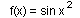

Numericka matematika
jan. '98.
asistent: Milan Drazic
1. Funkciju tabelirati
na intervalu [2.1, 2.8] sa korakom 0.1 sa 4decimale. Koristeci konacne
razlike do IV reda:
a) Izracunati f (2.15) i proceniti gresku
b) Izracunati f ' (2.15) i f " (2.15)
2. Za funkciju koja
se moze izracunati sa tacnoscu odrediti
optimalan korak za numericko diferenciranje na intervalu [3, 5] po formuli
:
3. Metodom LU dekompozicije resiti sistem, racunajuci sa 5 decimala.

4. Metodom Newtona sa tacnoscu  naci
sva resenja jednacine:
naci
sva resenja jednacine: